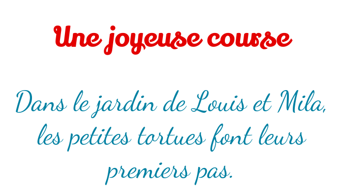

Les feuilles de style en cascade sont définies par le site Mozilla Developper Network (MDN). comme suit :
Les Cascading StyleSheets — ou CSS — (Feuilles de style en cascade) sont la
première technique à apprendre après le HTML. Alors que HTML s'utilise pour définir la structure et la
sémantique du contenu, les CSS sont employées pour composer et déterminer l'apparence de ce contenu.
Ainsi par exemple, vous utiliserez les CSS pour modifier les polices, la couleur, la taille et
l'espacement de votre contenu, pour le répartir sur plusieurs colonnes ou bien pour ajouter des animations
et autres fonctionnalités décoratives.
Exemple
Les deux images suivantes montrent l'effet des feuilles de style en cascade (CSS) sur une même page :
Une page en HTML seulement
La même page en HTML après application du CSS
Découverte
Appuyer sur F12, pour ouvrir l'inspecteur. En haut, s'affiche le code HTML de la page et en bas
les règles de style appliquées aux différents éléments de la page.
Contenu d'une feuille de style
On en déduit, alors, qu'une feuille de style est constituée, comme le montre l'image, par
un ensemble de règles de style.
Règles de style
Une règle de style est appliquée à un sélecteur qui indique les éléments
concernés. Cette règle modifie les valeurs par défaut des
propriétés du sélecteur.
La figure suivante, montre l'anatomie d'une règle de style.
Règle CSS
Dans l'exemple précédent, .sujet est appelé un sélecteur de
classe, qui signifie que la règle sera appliquée à tous les éléments qui
appartiennent à la classe sujet, plus précisement toutes les balises définies avec
un attribut class="sujet". Dans ce cas, la couleur du texte de l'élément sera
brown.
Premiers pas
Pour appliquer un style dans une page Web, on peut opter pour une des trois méthodes
possibles :
En utilisant l'attribut style : Le style est appliqué directement à l'élément à travers
l'attribut style="...".
Exemple :
<p style="text-align: center;">Texte du paragraphe centré</p>
En utilisant une feuille de style interne : En ajoutant les règles de
style dans la balise <style>...</style>. De préférence cette balise doit
être mentionnée dans la partie <head>...</head> du document HTML.
Exemple :
<head>
<!-- Déclarations head -->
<style>p {text-align: center;}</style>
</head>
<body>
<!-- contenu de la page -->
<p>Texte du paragraphe centré</p>
</body>
En utilisant une feuille de style externe : Les règles de style
sont regroupées dans un fichier CSS qui est lié au document HTML via la balise link. Cette
méthode autorise le partage d'une même feuille de style entre plusieurs pages web sans avoir à dupliquer le
code.
Exemple :
Fichier HTML
<head>
<!-- Déclarations head -->
<link rel="stylesheet" href="style.css">
</head>
<body>
<!-- contenu de la page -->
<p>Texte du paragraphe centré</p>
</body>
Fichier style.css
p {text-align: center;}
Attribut style
On peut appliquer une mise en forme à un élément d'une page Web en utilisant son attribut
style="...".
Par exemple, on veut colorier les différents éléments d'une phrase à l'aide de plusieurs couleurs.
Le sujet : couleur brown
Les adjectifs : couleurs blue et red
Le verbe : couleur chartreuse
Le complément : couleur darkgoldenrod
Coloriage des différents éléments de la phrase selon sa fonction
Commençons par le code HTML :
<p><span>Une
<i>jolie</i>
<i>petite</i> fille</span>
<b>se promène</b>
<u>dans le bois</u>.
</p>
Tout est noir. Le résultat n'est pas spectaculaire.
La balise <style>...</style> permet d'intégrer une feuille de style
interne dans une page Web. Cette balise doit figurer dans la partie
<head>...</head> du document.
Repenons l'exemple précédent qui illustre les composants d'une phrase à l'aide d'une feuille de style
interne.
Eléments d'une phrase
Commençons par donner une, certaine, sémantique (un sens) à chacune des parties de la phrase. Et ce dans le
code HTML.
Le code rgb(r, g, b) : Tout comme le code hexadécimal ce
code utilise
trois valeurs numériques, comprises entre 0 et 255 chacune, pour définir le dosage des trois couleurs
primaires :
rgb(r, g, b)
Exemples : rgb(120, 130, 140), rgb(100, 150, 200),
etc.
Travail demandé
Définir la couleur #e30000 pour le titre h1 et la
couleur #0081a3 pour les paragraphes.
h1 {
/* ajouter cette propriété */
color: #e30000;
}
Le résultat final ressemble à ce qui suit :
Une joyeuse course, colorier le texte
Taille de la police
La propriété font-size définit la taille du texte. La taille peut être exprimée en :
px (pixels) : Les points lumineux de l'écran de votre
ordinateur ou de votre téléphone sont appelées pixels.

Une joyeuse course, changer la famille de la police
Balises sémantiques
Ajouter des balises span avec les classes indiquées, dans l'image suivante, pour donner une
sémantique à leurs contenus.
Une joyeuse course, code HTML de la page
Ces span devront être remplacées par des images par la suite.
Cacher le texte d'un élément
Pour cacher le texte à l'intérieur du span il faudra agir sur quatre propriétés.
La propriété display de inline à inline-block, pour pouvoir
ajuster ses dimensions width et height, tout en conservant sa propriété
inline.
La largeur width de l'élément à zéro pour cacher son contenu.
L'indentation text-indent de l'élément à 200%, pour mettre le texte du
span à l'extérieur du rectangle visible.
changer la propriété overflow de l'élément à hidden, pour cacher le texte qui
du rectangle visible.
Travail demandé
Copier le code CSS suivant et le compléter.
span {
/* définir les propriétés : display, width, text-indent et overlow */
}
Le résultat final ressemble à ce qui suit, le texte des span est caché :
Une joyeuse course, cacher le texte des span
Image d'arrière plan
La propriété background-image sert à définir une image comme
image d'arrière plan de l'élément sélectionné en indiquant son url(image).
Il faut redimensionner l'élément qui contient une image d'arrière plan pour qu'il affiche l'image
entière et sans duplications. Propriétés : width et height.
Travail demandé
On donne le code suivant, qui permet de définir une image comme arrière plan pour l'élément
span ayant la classe jardin.
span.jardin {
background-image: url(images/image01.png); /* url de l'image */
width: 84px; /* Largeur de l'image */
height: 87px; /* hauteur de l'image */
}
On demande de compléter les autres définitions de classes.
Une joyeuse course, remplacer le texte par des images d'arrière plan
Alignement vertical
On remarque que les images insérées dans l'étape précédente ne sont pas bien alignées verticalement.
La propriété vertical-align, qui permet d'aligner les images verticalement dans un texte,
résout ce problème. Cette propriété peut prendre plusieurs valeurs, l'exemple suivant montre quelques-unes.
Exemple
vertical-align: baseline;
vertical-align: bottom;
vertical-align: middle;
vertical-align: top;
Travail demandé
Appliquer l'alignement adéquat aux images afin de ressembler à l'image suivante :
Une joyeuse course, alignement vertical des images
Résumé
Les propriétés CSS utilisées dans cette application sont :
color : couleur du texte
text-align : alignement du texte
font-size : taille de la police
font-family : famille de la police
display : mode d'affichage de l'élément inline,
inline-block ou block
width : largeur d'un élément
height : hauteur d'un élément
background-image : image d'arrière plan d'un élément
text-indent : indentation du texte dans l'élément
overflow : affichage de la partie qui déborde hors de l'élément
vertical-align : alignement vertical des images dans un élément